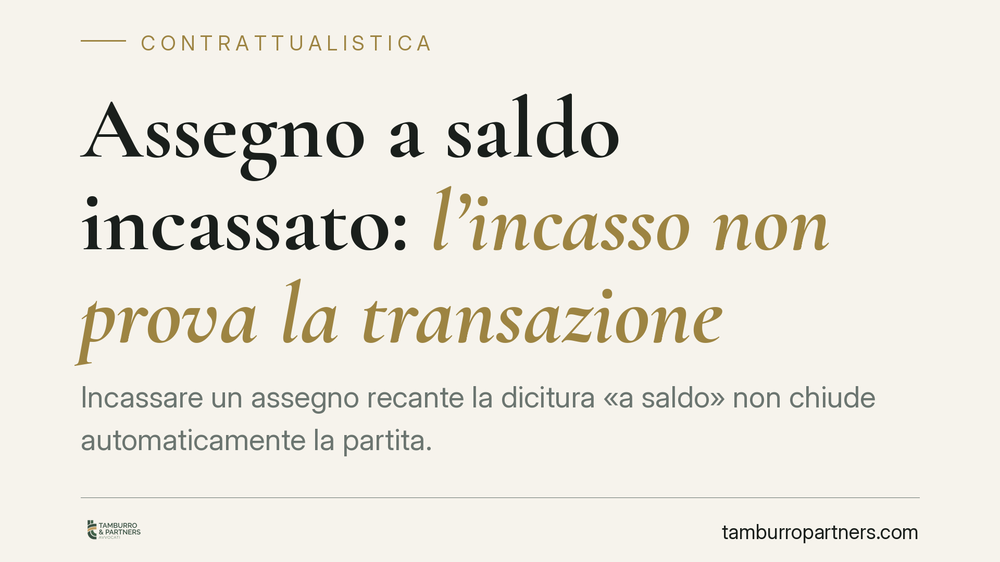

Assegno a saldo incassato: l'incasso non prova la transazione
Incassare un assegno recante la dicitura «a saldo» non chiude automaticamente la partita. Secondo una recente ordinanza della Sezione III civile della Cassazione, quel gesto non prova l'esistenza di una transazione, che richiede la forma scritta ai fini della prova. L'assicurato, quindi, può ancora agire per la differenza. Il principio ha ricadute ben oltre l'ambito assicurativo.

Il caso e il principio
Un assicurato riceve dalla compagnia un assegno con l'annotazione «a saldo». Lo incassa. La compagnia sostiene che, così facendo, l'assicurato abbia accettato una transazione e rinunciato a ogni ulteriore pretesa. L'assicurato, al contrario, chiede la differenza rispetto a quanto ritiene dovuto.
La Sezione III civile della Cassazione ha chiarito che il semplice incasso dell'assegno non equivale ad accettazione di una transazione. La quietanza — cioè la dichiarazione di aver ricevuto una somma — è cosa diversa dalla transazione, che è un contratto con cui le parti chiudono una lite facendosi reciproche concessioni.
Inquadramento normativo
La distinzione poggia su due norme del Codice civile.
L'art. 1965 c.c. definisce la transazione come il contratto con cui le parti, facendosi reciproche concessioni, pongono fine a una lite già insorta o prevengono una lite che può sorgere. L'elemento decisivo sono le concessioni reciproche: entrambe le parti rinunciano a qualcosa.
L'art. 1967 c.c. impone la forma scritta per la transazione, ma ai fini della prova (forma *ad probationem*). Significa che, in mancanza di un documento scritto, la transazione non può essere dimostrata in giudizio con testimoni né con presunzioni. Operano infatti i limiti dell'art. 2725 c.c. (divieto di prova testimoniale per i contratti che richiedono la forma scritta) e dell'art. 2729 c.c. (esclusione della prova per presunzioni negli stessi casi).
Restano tuttavia ammessi due mezzi di prova: la confessione e il giuramento. Chi voglia dimostrare la transazione può quindi provocare l'ammissione della controparte o deferirle il giuramento, ma non può appoggiarsi alla sola circostanza dell'incasso di un assegno «a saldo».
Perché l'incasso non basta
La dicitura «a saldo» apposta su un assegno esprime, al più, l'intento del solvente. Non prova l'accordo bilaterale né le reciproche concessioni che caratterizzano la transazione. L'incasso, di per sé, può valere come mera quietanza: attesta che una somma è stata ricevuta, non che il rapporto è stato definito con rinuncia a ogni ulteriore pretesa.
Manca, in altre parole, il documento scritto che l'art. 1967 c.c. richiede per provare la transazione. Senza quel documento, la difesa fondata sull'avvenuta transazione resta priva di supporto probatorio ammissibile.
Implicazioni pratiche
Il principio non riguarda solo il rapporto tra assicurato e compagnia. Vale in ogni contesto in cui un pagamento parziale viene proposto come «a saldo e stralcio».
Per chi riceve il pagamento (assicurato, appaltatore, fornitore, professionista): incassare un assegno «a saldo» non comporta, da solo, rinuncia alla differenza. La pretesa residua resta azionabile, salvo che la controparte riesca a provare la transazione con i mezzi ammessi.
Per chi paga e vuole chiudere davvero la vicenda (compagnia, committente, cliente): non è sufficiente scrivere «a saldo» sull'assegno. Occorre un accordo transattivo scritto e sottoscritto, che indichi con chiarezza l'oggetto della lite, le reciproche concessioni e la rinuncia a ogni ulteriore pretesa.
Lo stesso schema si estende ai contratti di appalto, alle forniture e alle prestazioni professionali: la rinuncia al saldo residuo non si presume dal pagamento parziale.
Cosa fare in concreto
- Prima di incassare un assegno «a saldo» di cui si contesta la congruità, valutare l'opportunità di formulare per iscritto una riserva di agire per la differenza.
- Conservare ogni corrispondenza (lettere, e-mail, PEC) che documenti la mancata accettazione dell'importo come definitivo.
- Chi intende definire una controversia deve predisporre un atto transattivo scritto, con indicazione della lite, delle concessioni reciproche e della rinuncia espressa.
- Non fare affidamento sulla sola annotazione «a saldo»: senza documento scritto, la transazione è difficilmente dimostrabile.
- In caso di contestazione, ricordare che la controparte potrà provare la transazione solo con confessione o giuramento, non con testimoni o presunzioni.
Disclaimer
Contributo informativo a cura di Tamburro & Partners - Avv. Giuseppe Tamburro. Non costituisce parere legale.
Ogni contratto ha il suo equilibrio.
Se vuoi una revisione delle clausole o una redazione su misura, scrivi allo studio. Ti rispondiamo entro un giorno lavorativo.